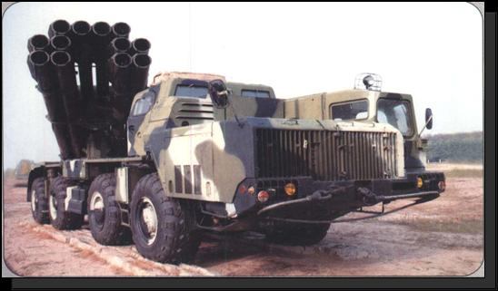
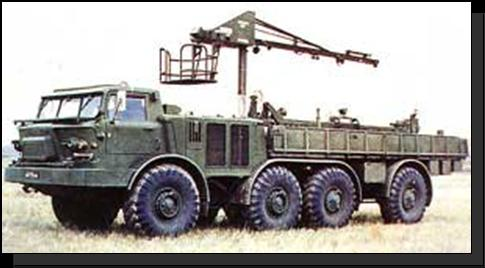
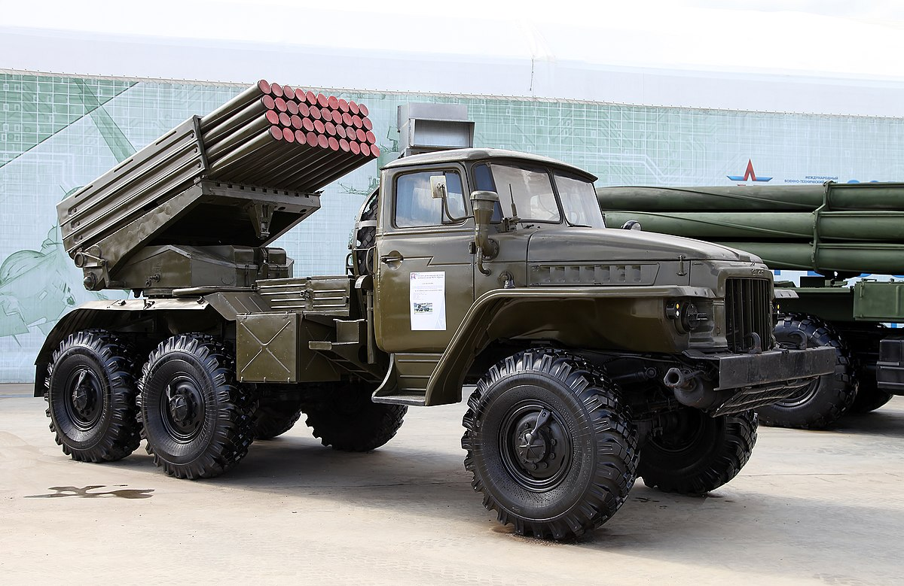

Одним із перших сучасних РСЗВ був німецький реактивний міномет «Nebelwerfer» 1930-х років, по суті, маленька буксирувана артилерійська гармата. В СРСР напередодні Другої світової війни була створена перша сучасна РСЗВ БМ-13 «Катюша». Лише пізніше, після Другої світової війни, союзники почали розробляти аналогічну зброю. Так, першими самохідними установками залпового вогню і, можливо, найвідомішими були радянські «Катюші», знані також як «орга́н Сталіна», вперше використані під час Другої світової війни й експортувалися згодом для радянських союзників. Це була проста система, у якій установка для запуску включала звичайні рейки, встановлені в задній частині вантажівки ЗІС-6. Американці створили першу власну РСЗВ на основі танків M4 Sherman. Відмінним було використання трубчастих пускових установок зверху. Пізніше в США була схожа розробка — Т-34 Калліопа — ракетний танк, який використовувався тільки в невеликих кількостях.
|  |
РСЗВ 9К58 «Смерч»Реактивна система залпового вогню 9К58 «Смерч» призначена для ураження будь-яких групових цілей, неброньованої, легко броньованої та броньованої техніки мотопіхотних і танкових рот, підрозділів артилерії, тактичних ракет, зенітних комплексів і вертольотів на стоянках, руйнування командних пунктів, вузлів зв’язку та об’єктів військово-промислової структури. Склад комплекту:
|
|  | Реактивна система залпового вогню 9К57 «Ураган»Призначена для ураження живої сили, легко броньованої техніки мотопіхотних і танкових підрозділів противника в місцях зосередження і на марші, руйнування командних пунктів, вузлів зв’язку і об’єктів військової промисловості, інфраструктури, дистанційного встановлення мінних полів.
Склад комплекту:
|
|  | Реактивна система залпового вогню 9К57 «Ураган»Реактивна система залпового вогню 9К51 «Град» призначена для знищення і подавлення живої сили та бойової техніки противника в районах зосередження. Реактивна система залпового вогню БМ-21 "Град" регулярно зустрічається у зведеннях з передової російсько-української війни.Ця зброя продовжує активно застосовуватись у більшості конфліктів та модернізуватись вже понад 60 років. Своєю довговічністю вона зобов’язана високою ефективністю та масовістю, бо за весь час БМ-21 "Град" було випущено від 8500 одиниць до, близько, 100 тисяч, якщо рахувати всі ліцензійні та неліцензійні копії, а також машини на базі. Склад комплекту:
|